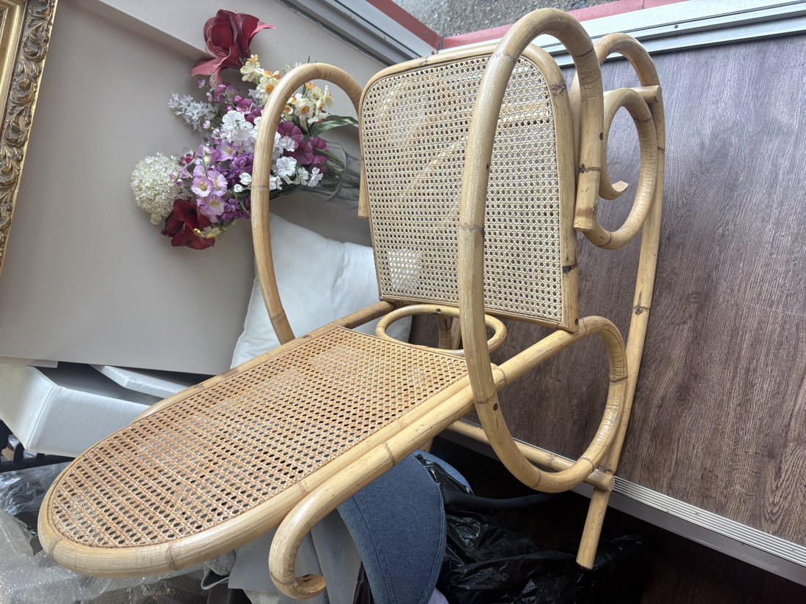

Cannage, roseau et jonc
Le cannage se tisse à la main, un trou à la fois, dans le maillage d’origine de la chaise. L’espacement des trous percés permet de l’identifier, et le respecter distingue une réparation d’une rustine.
Cannage tissé à la main ou en feuille ?
Si votre chaise a une couronne de trous individuels percés autour de l’ouverture, elle a été tissée à la main et doit l’être de nouveau — sept passes, enfilées un trou à la fois, généralement de six à dix heures pour un siège.
Si elle a une rainure continue avec une baguette de rotin enfoncée dedans, c’est du cannage en feuille : le panneau tissé est trempé, posé dans la rainure et bloqué avec une baguette neuve. Plus rapide, solide, et correct pour tout ce qui a été fait après environ 1920.
Les sièges de jonc, la corde de papier danoise et les panneaux de fibre pressée se travaillent également ici, et un tissage sur mesure peut être commandé lorsqu’un motif est discontinué.

Les vingt tissages en stock
Les maillages désignent la distance entre les centres des trous. Apportez la chaise, ou mesurez-la et téléphonez.